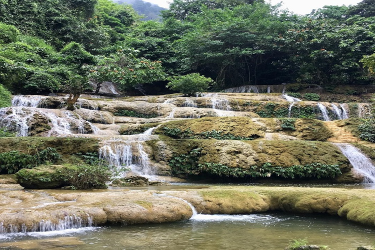
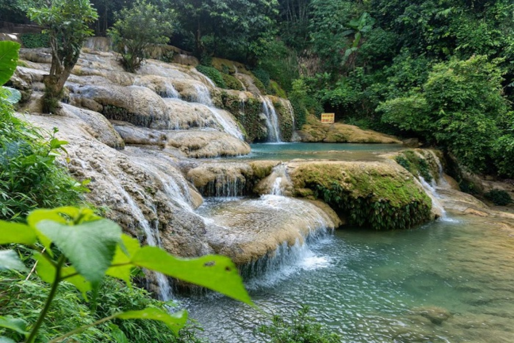
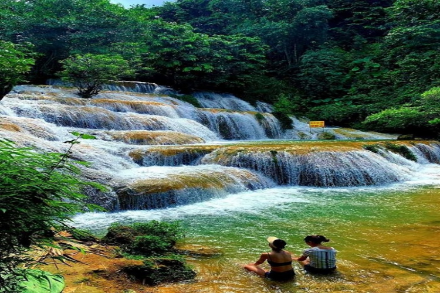

Mang vẻ đẹp hoang sơ, hùng vĩ, cùng dòng nước mát lạnh, xanh trong, thác Mây Thanh Hóa đang là điểm vui chơi, tham quan được du khách xa gần vô cùng yêu thích. Nếu đến du lịch Thanh Hóa, nhớ đừng bỏ qua điểm đến này, nơi có cảnh quan đẹp tuyệt sắc với những trải nghiệm thú vị về đời sống, văn hóa của người Mường xứ Thanh.
Mang vẻ đẹp hoang sơ, hùng vĩ, cùng dòng nước mát lạnh, xanh trong, thác Mây Thanh Hóa đang là điểm vui chơi, tham quan được du khách xa gần vô cùng yêu thích. Nếu đến du lịch Thanh Hóa, nhớ đừng bỏ qua điểm đến này, nơi có cảnh quan đẹp tuyệt sắc với những trải nghiệm thú vị về đời sống, văn hóa của người Mường xứ Thanh. Người Mường tin rằng, những người yêu nhau nếu cùng lên thác tắm sẽ nên duyên vợ chồng. Vì vậy, thác còn được gọi là thác “9 bậc tình yêu”.
Thời điểm thích hợp nhất để đi thác Mây là vào mùa hè khoảng từ tháng 6 đến tháng 8. Thời điểm này, thời tiết Thanh Hóa khá dễ chịu, nhiều nắng. Nắng chiếu lên dòng thác đang chảy lấp lánh tạo nên một bức tranh phong cảnh đẹp lung linh. Đến thác Mây vào mùa này, du khách tha hồ đắm mình trong làn nước mát lành, khám phá quang cảnh xung quanh, trải nghiệm các hoạt động vui chơi bên thác thú vị.
Những lưu ý khi đi Thác Mây:
Nguồn: Sưu tầm